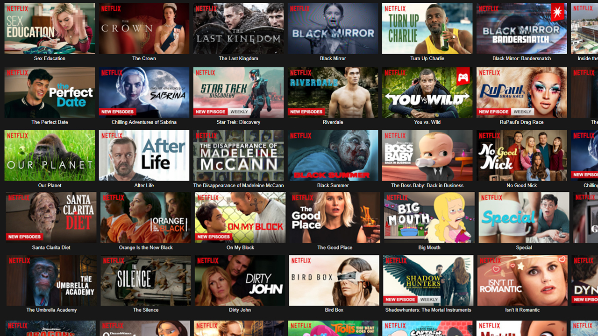
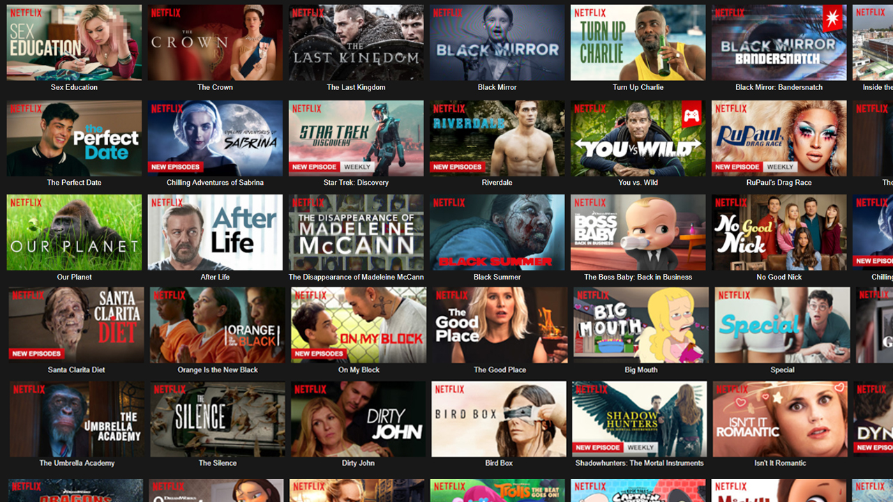

One-Punch Man (Japanese: ワンパンマン, Hepburn: Wanpanman) is a Japanese superhero franchise created by the artist ONE. It tells the story of Saitama, a superhero who can defeat any opponent with a single punch but seeks to find a worthy foe after growing bored by a lack of challenge due to his overwhelming strength. ONE wrote the original webcomic version in early 2009. A digital manga remake began publication on Shueisha's Tonari no Young Jump website in June 2012. The manga is illustrated by Yusuke Murata, and its chapters are periodically compiled and published into individual tankōbon volumes. As of December 2019, 21 volumes have been released.
The Witcher is a Polish-American fantasy drama web television series produced by Lauren Schmidt Hissrich. It is based on the book series of the same name by Polish writer Andrzej Sapkowski. Set on a fictional, medieval-inspired landmass known as "the Continent", The Witcher explores the legend of Geralt of Rivia and princess Ciri, who are linked to each other by destiny.[8] It stars Henry Cavill, Freya Allan and Anya Chalotra. The show initially follows the three main protagonists at different points of time, exploring formative events that shaped their characters, before eventually merging into a single timeline.

Suits is an American legal drama television series created and written by Aaron Korsh. The series premiered on USA Network on June 23, 2011 and is produced by Universal Cable Productions. The series concluded on September 25, 2019 and is now available on Prime Video, Netflix and Peacock. Suits is set at a fictional New York City law firm and follows talented college dropout Mike Ross (Patrick J. Adams), who starts working as a law associate for Harvey Specter (Gabriel Macht) despite never having attended law school.[1] The show focuses on Harvey and Mike closing cases, while maintaining Mike's secret.[2] The show also features the characters Louis Litt (Rick Hoffman), Rachel Zane (Meghan Markle), Donna Paulsen (Sarah Rafferty), and Jessica Pearson (Gina Torres).
Stranger Things is an American science fiction horror web television series created by the Duffer Brothers and released on Netflix. The twins serve as showrunners and are executive producers along with Shawn Levy and Dan Cohen. The series premiered on Netflix on July 15, 2016. Set in the 1980s in the fictional town of Hawkins, Indiana, the first season focuses on the investigation into the disappearance of a young boy amid supernatural events occurring around the town, including the appearance of a girl with psychokinetic abilities. The series stars an ensemble cast including Winona Ryder, David Harbour, Finn Wolfhard, Millie Bobby Brown, Gaten Matarazzo, Caleb McLaughlin, Noah Schnapp, Sadie Sink, Natalia Dyer, Charlie Heaton, Joe Keery, Cara Buono and Dacre Montgomery.